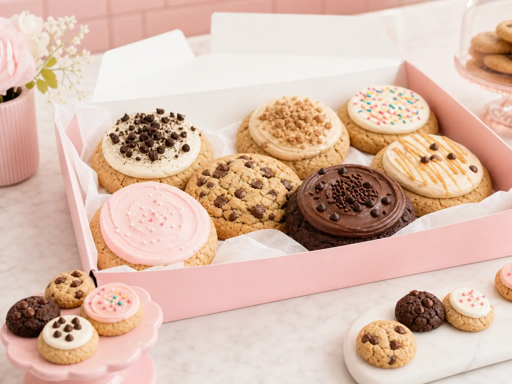

Office Meetings
Boardrooms, sales trainings, client visits, appreciation days, and all-hands meetings.
Greater Houston catering
Warm Batch coordinates Houston-area Crumbl catering with pink-box assortments, rotating flavors, minis, and large-cookie orders for offices, districts, nonprofits, weddings, churches, and neighborhood events.
Crumbl-style assortments
Build around minis for easy serving, large cookies for premium tables, or a mixed assortment for teams that want the weekly flavor lineup. We help match the product format to the room, timing, and headcount.

Send the date, guest count, location, and timing. We will help route the order, confirm realistic pickup or delivery windows, and keep the details clear before the event day.
Boardrooms, sales trainings, client visits, appreciation days, and all-hands meetings.
Teacher appreciation, PTA events, campus celebrations, concessions, and bid-based orders.
Church gatherings, nonprofit fundraisers, sports banquets, graduations, and neighborhood parties.
Houston area
Warm Batch serves a growing Houston-area footprint, with active local operations around Sugar Land, Cypress, Towne Lake, The Woodlands, and Memorial.
Email the date, time, headcount, and delivery or pickup preference. For large multi-location orders, the official Crumbl B2B team can also help coordinate.